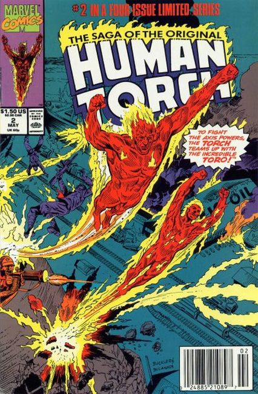
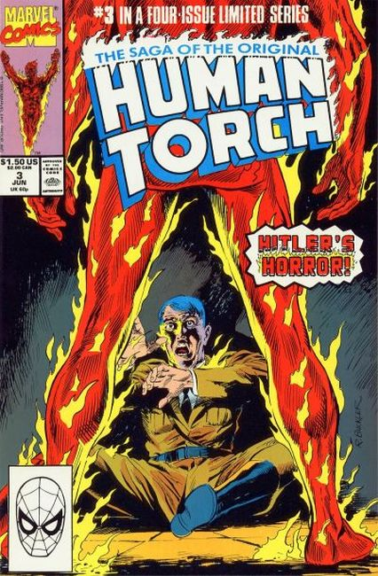
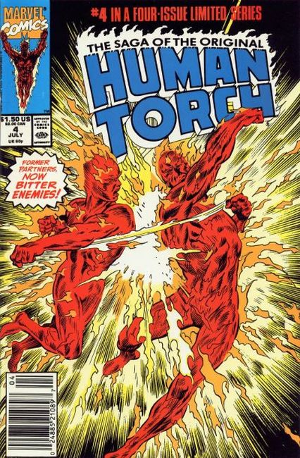

"The Lighted Torch" The 50-year history of the Torch, from his creation in the 1940s, to his entombment, to his shocking present! Amplifies on original from Marvel Comics #1

"The World on Fire" The Human Torch takes on a partner, Toro, and together they battle the Nazis in World War II in the rip-roarin' recounting of the history of the original Human Torch! Recaps events from origin through 1944.

"Out of the Ashes" A recapping of events surrounding the original Human Torch from the death of Hitler through end of the 1940s; aerial combat action. The Man Who Lit the Torch article by Jim Steranko.

"The Flaming 50s" Former partners, now bitter enimies.